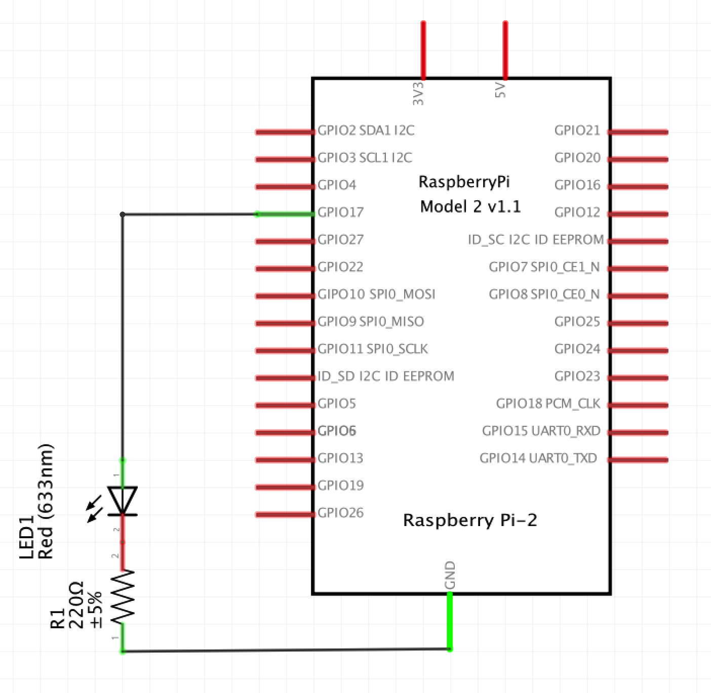
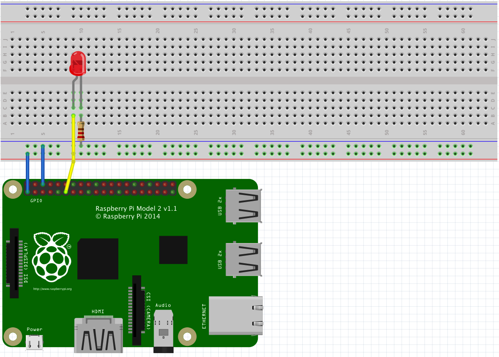

Exploring
What Will You Learn
The Raspberry Pi is humming, you’re logged into the Raspberry via ssh, java works,and bndtools is showing an empty workspace with only the cnf directory. In this section we will start exploring the Raspberry in the most basic way. We will create an application project that we then use to first just create a little component that plays with the hardware in a component.
Create Application Project
In the workspace, create a project. In this tutorial this project is called osgi.enroute.examples.iot.domotica.application, but you should obviously give it a name dear to you, just make sure it ends with .application since the OSGi enRoute template uses that extension to provide the proper project structure for a web application. It should therefore go without saying, that you should select the OSGi enRoute template when asked.
The following code assumes the osgi.enroute.examples.iot.domotica.application name and from this name it derives package names. If you choose your own names, make sure to proper translate these derived names.
Hello World
An OSGi enRoute Application project is a full web application with REST but we are first going to ignore those goodies. As always, the easiest app is to say Hello World (and on OSGi also Goodbye World!). So lets create a component in the osgi.enroute.examples.iot.domotica.command package that performs these highly complex actions:
@Component
public class DomoticaCommand {
@Activate
void activate() {
System.out.println("Hello World");
}
@Deactivate
void deactivate() {
System.out.println("Goodbye World");
}
}
Make sure you add the package to the private packages of the bundle. You can do this by double clicking on the provider.bnd file, select the Contents tab and drag the package in the Private Package list.
Remote Debugging
The OSGi enRoute Application template has created a complete runnable project. The osgi.enroute.examples.iot.domotica.bndrun file has a specification for running this application on an OSGi server that contains an HTTP server an other necessities in life. However, in this case we will use the debug.bndrun run specification. This run specification inherits its setup from the osgi.enroute.examples.iot.domotica.bndrun file, it just adds a number of useful debugging bundles.
The Http Server will run by (the OSGi) default on port 8080. You can change this port number by setting a run property in the osgi.enroute.examples.iot.domotica.bndrun file:
-runproperties: org.osgi.service.http.port = 9090
So double click this file and go to the Source tab. In the editor, add the following instruction:
-runpath: biz.aQute.remote.launcher
-runremote: \
pi; \
jdb=1044; \
host=192.168.2.4; \
shell=-1
Obviously you have to change the IP number to the one you are using. In the pre-requisites we should have started the bnd remote main program via ssh:
$ ssh pi@192.168.2.4
pi@raspberrypi ~ $ sudo bndremote -a
Listening for transport dt_socket at address: 1044
The -a option indicates that bndremote should listen to all interfaces, not just localhost.
We now need to resolve the run specification. On the debug.bndrun, select the Run tab and click the Resolve button.
The next step is to run this Run specification. Select the debug.bndrun file and call up the context menu, and select @/Debug As/Bnd Native Launcher. This will cause bnd to start the debugger and look for a remote agent on the specified host. If you forgot to start the remote agent then you have all the time of the world, bnd(tools) will keep tryng until it finds an agent. Once it succeeds, the ssh shell window should look like:
____________________________
Welcome to Apache Felix Gogo
g!
2015-07-14 16:41:59.701:INFO:oejs.Server:jetty-8.1.14.v20131031
2015-07-14 16:42:00.202:INFO:oejs.AbstractConnector:Started SelectChannelConnector@0.0.0.0:8080
[INFO] Started Jetty 8.1.14.v20131031 at port(s) HTTP:8080 on context path /
[INFO] Detected extended HttpService. Filters enabled.
[INFO] Http service whiteboard started
Hello world
Web server
The bndtools IDE will continuously update the bundles on the remote agent. Let’s test it by changing the “Hello World” to “I love Domotica!”.
Goodbye World!
I love Domotica
Talking to the Hardware
We can now run code on the Pi so the next step is to talk to do something really “Piish”. Obviously, talking to the hardware is pretty specific to the Pi. The primary library talking to the hardware in the Java world is Pi4j. We could use this library directly but we can also use the OSGi enRoute version. The OSGi enRoute distro contains a bundle osgi.enroute.iot.pi.provider. This bundle contains Pi4j, which is a Java library based on Wiring Pi, a native code library to control the BCM2835 chip in the Raspberry Pi, which will be our gateway to leave the cyberworld and talk to things. This bundle is designed to work with the osgi.enroute.iot.circuit.provider bundle, however, we will first descent to the Pi4J level. The osgi.enroute.iot.pi.provider bundle therefore also registers a Pi4J GpioController.
So first add the maven dependency into the central.xml of your bnd workspace (into the cnf folder) with these lines:
<dependency>
<groupId>org.osgi</groupId>
<artifactId>osgi.enroute.iot.pi.provider</artifactId>
<version>2.0.0</version>
</dependency>
To see change you probably have to refresh the repository tree from eclipse repositories view. Then add osgi.enroute.iot.pi.provider to the osgi.enroute.examples.iot.domotica.bndrun’s -runrequires instruction:
-runrequires: \
osgi.identity;filter:='(osgi.identity=osgi.enroute.iot.domotica.application)',\
osgi.identity;filter:='(osgi.identity=osgi.enroute.iot.pi.provider)'
Actually, the easiest way to do this is to select the Run tab and then drag the osgi.enroute.iot.pi.provider from the repositories to the Run Requirements list. Save this file, then go to the debug.bndrun file and click on the Resolve button in the Run tab and save this file. This will load the osgi.enroute.iot.pi.provider bundle in the Pi.
The osgi.enroute.iot.pi.provider bundle adds a GpioController service from the Pi4j project. Since we want to use that GpioController service we need access to the type. We therefore need to add this bundle also to the bnd.bnd file’s -buildpath instruction.
-buildpath: \
osgi.enroute.base.api,\
osgi.enroute.logger.simple.provider,\
osgi.enroute.web.simple.provider;version=1.2,\
osgi.enroute.iot.circuit.provider,\
osgi.enroute.iot.pi.provider
You can of course also click on the + in the bnd.bnd’s file Build tab and it from the list.
Let’s first do something very naughty: use statics. The Pi4j library has a SystemInfo class that provides lots of information about our Pi.
@Component
public class DomoticaCommand {
@Activate
void activate() throws Exception {
System.out.println(SystemInfo.getBoardType().name()
+ " " + SystemInfo.getSerial());
}
@Deactivate
void deactivate() {
System.out.println("Goodbye World");
}
}
Save the file Java source file and watch the output:
Goodbye World!
Model2B_Rev1 00000000237a3302
Real Hardware
It is time to get this hardware out of the static-electricy protection pouches! We are going to make an LED blink! To “design” this scenario we use a handy open source tool called “Fritzing”. It allows us to design in schema or breadboard mode. Let’s start with a schema:
.
A bit about pin numbering … that is a bit of a mess. Pi4j uses another numbering than the Raspberry connector/chip uses. This is highly confusing. In the schema we connected the LED to the Raspberry GPIO17 on in the connector pin 11, in Pi4J this called the GPIO00 pin. Confused? You will be. We will keep the Pi4J numbering as much as possible. This the connector for Pi4j numbering:
 .
.
We connect the positive side of the LED to the GPIO 4 of the Raspberry and then connect it to ground via a 220Ω resistor. An LED is a light emitting diode, quite popular nowadays because they are very power efficient. The resistor is there to limit the current, otherwise we could destroy the Raspberry GPIO port or the LED. (Murphy says the Raspberry is the more likely candidate since it is more expensive). Remember that Electronics 101 class? We limit the current to less than (2.7V)/220Ω ~ 20 mA. This is within the Raspberry Pi limits.
We implement this schema on a breadboard. A breadboard is a little board that makes it easy to prototype with the Raspberry Pi. It provides power lines above and below the board and a prototyping area where the vertical lines are connected. The distance between the holes is standard 0.1 inch, most ICs can be delivered with pins that use this spacing. Connections are made using small wires. Our breadboard is shown in the following picture:
.
We follow industry standard colors:
- Red – Power, in our case the Raspberry 3.3V
- Blue – Ground
- Other – Signal wires
A quick word about the electronics involved. LEDs are Light Emitting Diodes and the diode part is important for us – they only pass electricity one way, so we need to make sure we put them in the right way round. They have a long leg and a slightly shorter leg. The long leg goes to the plus side and the shorter leg to the negative (or 0v) side. If we’re cut the legs short (as I have done here), then another way is to look at the side of the LED – there will be a flat section. Think of the flat as a minus sign and connect that to the resistor so that it is connected to the ground side of the circuit.
You could test the circuit by connecting a temporary wire from the red 3.3V barto the LED on the side of the yellow wire. This should light the LED.
Blinking!
The next step is the software. The following code will start a thread and blink the LED. The details about the API are to be found at the Pi4j site. We are using the Pi4J API but realize that this API is not how you should use the Raspberry Pi on with OSGi.
private Scheduler scheduler;
private Closeable schedule;
@Activate
void activate() throws Exception {
try {
GpioController gpioController = GpioFactory.getInstance();
while (!gpioController.getProvisionedPins().isEmpty())
gpioController.unprovisionPin(gpioController.getProvisionedPins().iterator().next());
GpioPinDigitalOutput out = gpioController
.provisionDigitalOutputPin(RaspiPin.GPIO_00, "LED1",
PinState.LOW);
schedule = scheduler.schedule(() -> {
boolean high = out.getState().isHigh();
out.setState(!high);
}, 500);
} catch (Exception e) {
e.printStackTrace();
}
}
@Deactivate
void deactivate() throws IOException {
schedule.close();
System.out.println("Goodbye World!");
}
@Reference
void setScheduler(Scheduler scheduler) {
this.scheduler = scheduler;
}
Save the code, and see how the LED is blinking at you!
Thinking Ahead
We hope you’re still reading this and not escaped to the Pi4J site to see how you can use the GpioController to do more cool stuff and impress your partner with your explorations outside cyberspace. For we need to talk a bit …
Take a look at the code. This activate method clearly shows that we have one of those evil static APIs with life cycle attitude. Static APIs with such an attitude generally spell trouble in OSGi. Things work better with services. And this is a prime example of the disadvantages. As you can see, we need this odd loop to clear out any pins that were already provisioned before. We then need to create the pin while choosing a specific GPIO. If you think about this API then you should realize that such a design does not work very well in a shared environment. What if other bundles want use a GPIO pin as well? How do we prevent it from being cleared. We picked GPIO00 but that was arbitrary, we could’ve picked any GPIO. Sadly, lots of APIs are designed with the God complex, thinking that there is a single designer that omniscient. In a modular environment we try to avoid those like the plague. So in the coming sections we show an alternative on OSGi mechanisms. This example was just to get a quick and dirty win.